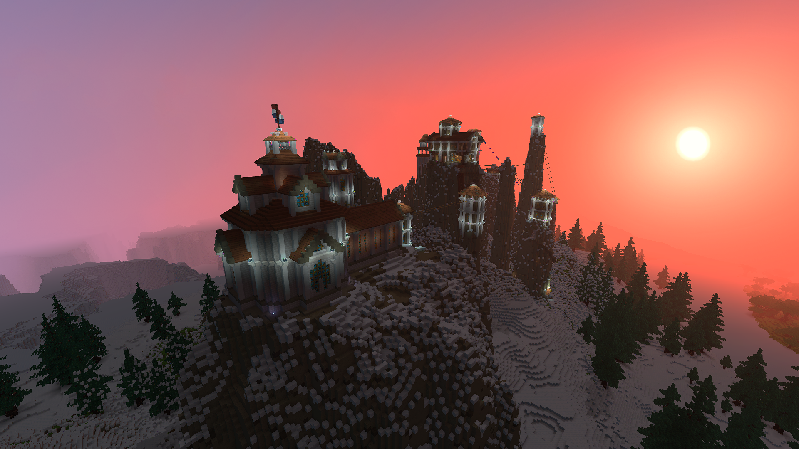
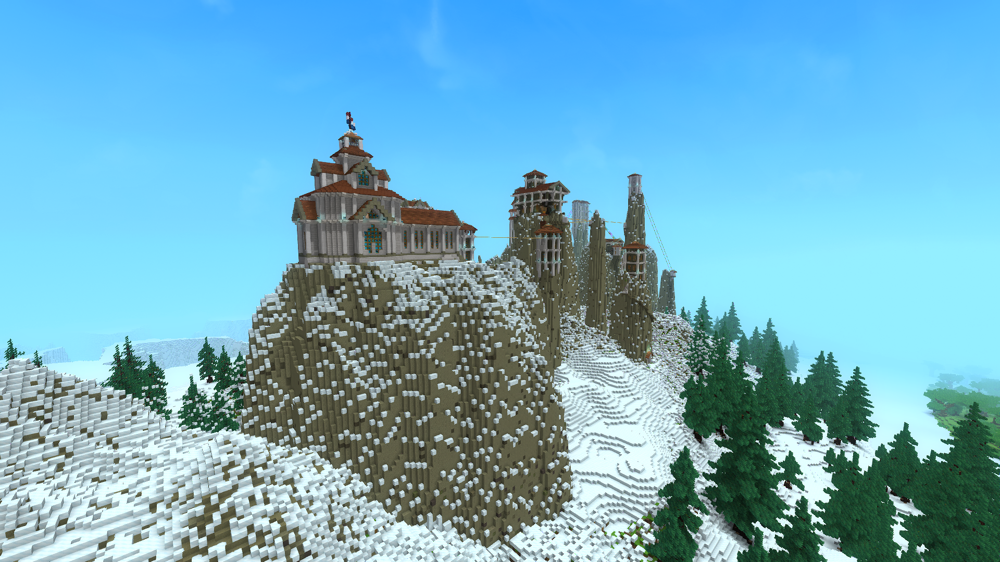
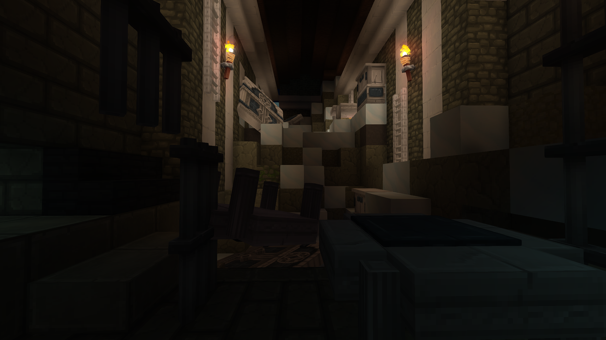
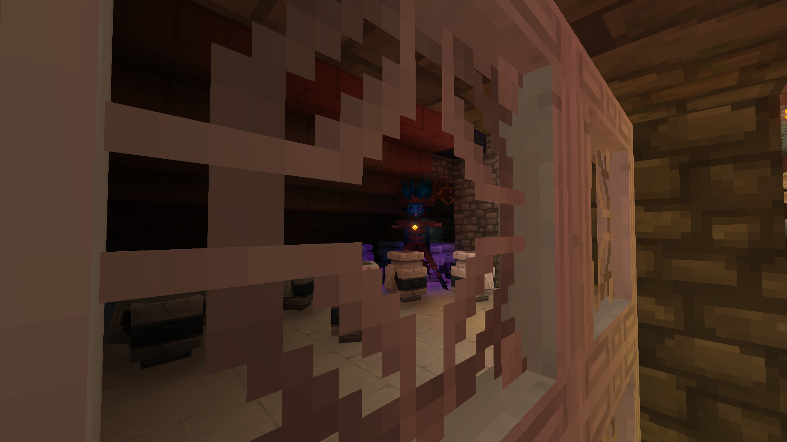
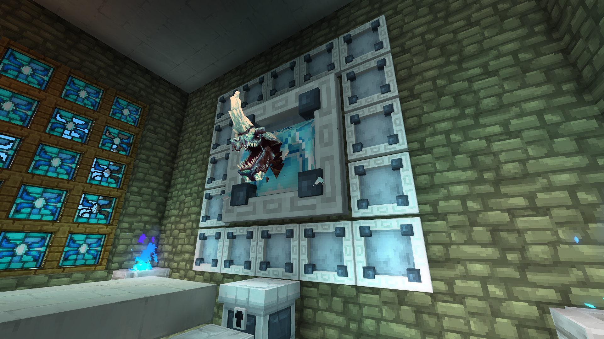
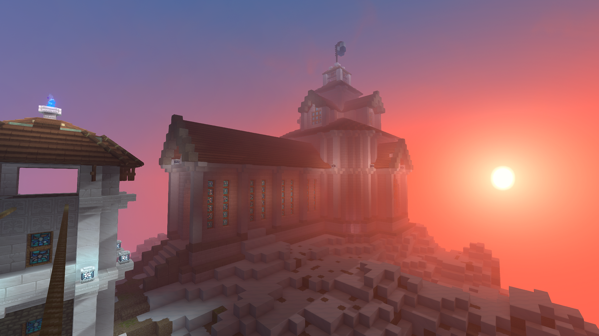
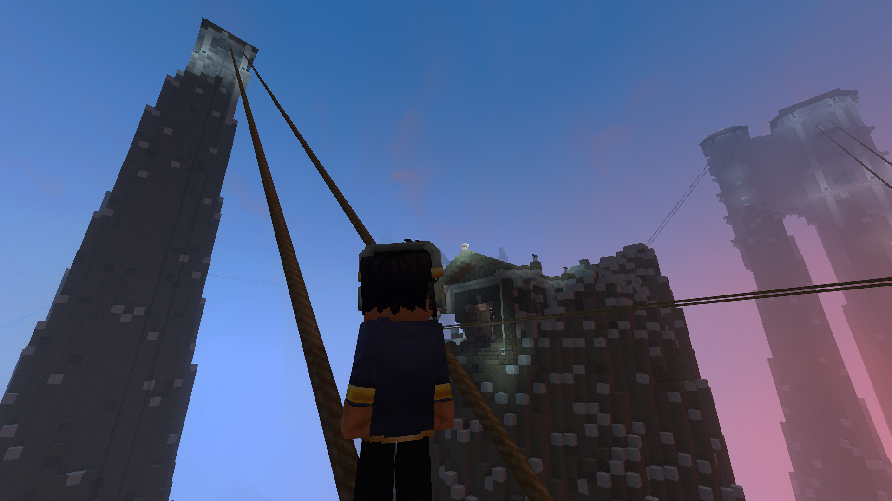

Meteora is a series of ancient monasteries perched atop high, pillared mountains. Once a place of religious practice, it transitioned into a military training ground where monks defended against undead threats before falling into ruin and corruption. The peaks remain interconnected by precarious rope lines, hiding valuable loot and a legendary chest within its fractured, undead-infested halls.
Meteora

| Location Information | |
|---|---|
| Coordinates | X: 617, Z: 787 |
| Area Type | Rural Ruins |
| Mob Threat | Very High |
| Bandit Threat | High |
| Number of Chests | 20 |
| Water Source | Yes |
| Clean Water Source | No |
| Fireplace | No |
| Chef's Stove | No |
| Workbench | No |
| Available Loot | ||
|---|---|---|
| 🍎 Food | ✗ | |
| 🥛 Civilian | Tier 1 | ✗ | |
| ✂️ Civilian | Tier 2 | ✗ | |
| 🛠️ Civilian | Tier 3 | 4 | |
| 🛡️ Military | Tier 1 | ✗ | |
| ⚔️ Military | Tier 2 | 4 | |
| 🏹 Military | Tier 3 | 11 | |
| 🌟 Legendary | ✔ | |
Lore
Where the earth reaches toward the heavens in jagged limestone fingers, there lies Meteora: once a bastion of spiritual enlightenment, now a gravity-defying graveyard and a warning etched in stone.
History
In ages past, Meteora's monasteries were silent retreats where monks sought communion with the celestial. When the undead began to spread, prayer gave way to steel. Cloisters became barracks, scripture became military doctrine, and the warrior-monks learned to turn rope lines and sheer elevation into living weapons against the horrors below.
The downfall of Meteora did not come through siege, but through ambition. The High Sensei, consumed by dominion, redirected the order toward darker goals and assembled his infamous gallery of God-Trophies in the central complex.
God-Trophies
- The severed, frost-veined head of the Ice Dragon.
- The four Elemental Spirits, slain and framed.
- The legendary Hedera, a being of immense, quiet power.
The Hedera
The Hedera was the Sensei's ultimate prize. Rumors claim it carries the Void-Command: the power to tear reality, summon creatures from the Void, and bend them to its will. Yet this power is bound to Murky Water. On these dry, windswept peaks, the Hedera remains petrified, dormant, and waiting for a single drop of corruption.
Present Day
The Undead Takeover has turned holy halls into rotting corridors. The old cart system that once linked the spires is long dead, leaving only precarious rope lines between cliffs. Still, adventurers come for the legendary chest, high-value relics, and the remains of sentinels that continue their eternal, forgotten duty.
To step onto Meteora's ropes is to walk the line between incredible wealth and an eternal fall into the fog. Proceed with caution: the Void is listening, and the Hedera is only a flood away from waking.
Gallery





